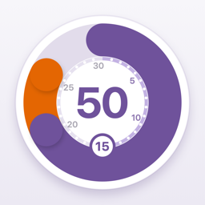

Отчёт50Report50Relatório50Raport50
Политика конфиденциальности
Действует с 18 ноября 2026 г.
Коротко: приложение не собирает никаких данных. Всё, что вы вводите, хранится только на вашем iPhone. Разработчик ничего не получает и не видит. В приложении нет регистрации, серверов, аналитики, рекламы, отслеживания и сторонних библиотек, которые бы что-то отправляли.
Что хранится на телефоне
- часы служения, кредит, изучения, дни болезни и записи плана недели;
- имена напарников, если вы их записываете;
- настройки приложения.
Эти данные лежат в памяти приложения на устройстве. Их видят только само приложение, его виджеты и таймер на экране блокировки.
Когда данные покидают телефон — только по вашему действию
- Резервная копия. Если вы выберете папку в iCloud Drive, туда сохраняется файл с вашими данными. Он хранится в вашем iCloud по правилам Apple.
- Календарь. Если вы включите выгрузку в календарь, окна служения из плана недели (время, вид служения и имена напарников) добавляются в выбранный вами календарь и обновляются там.
- «Поделиться». Текст отчёта, открытка или видео благодарности уходят только тем, кому вы сами их отправите.
- QR-код встречи. В коде — ссылка: время, вид служения, место и ваше имя, если вы его указали. Камера напарника открывает по ней Отчёт50, а без приложения — страницу встречи на этом сайте (GitHub Pages); тогда ссылку, как при открытии любого сайта, получает хостинг GitHub. Разработчик эти данные не получает и не хранит.
Разрешения
- Календарь — только для выгрузки плана недели, если вы её включили. Приложение не читает другие ваши события и не передаёт их.
- Уведомления — только для напоминаний, которые вы включили сами.
- Фото — если вы выбираете своё фото для открытки, iPhone передаёт приложению только этот снимок, без доступа ко всей галерее. Фото никуда не отправляется, пока вы сами не поделитесь открыткой.
- Датчик движения — если включено: переворот телефона экраном вниз скрывает или показывает цифры. Данные датчика не сохраняются.
Удаление данных
Удалите приложение — данные на телефоне удалятся вместе с ним. Резервную копию можно удалить в приложении «Файлы», события — в календаре.
Дети
Приложение не собирает данные ни о ком, в том числе о детях.
Изменения
Если политика изменится, новая версия появится на этой странице с новой датой.
Вопросы: like4myself@gmail.com
Privacy Policy
Effective November 18, 2026
In short: the app does not collect any data. Everything you enter stays on your iPhone. The developer receives and sees nothing. The app has no sign-up, no servers, no analytics, no ads, no tracking and no third-party libraries that send anything.
What is stored on your phone
- service hours, credit, Bible studies, sick days and weekly plan entries;
- partner names, if you add them;
- app settings.
This data is kept in the app’s storage on your device and is used only by the app itself, its widgets and the Lock Screen timer.
When data leaves your phone — only when you choose
- Backup. If you choose a folder in iCloud Drive, a file with your data is saved there. It is stored in your own iCloud under Apple’s terms.
- Calendar. If you turn on calendar export, service slots from your weekly plan (time, activity and partner names) are added to the calendar you choose and kept up to date there.
- Share. The report text, a thank-you card or video goes only to the people you send it to.
- Meeting QR code. The code holds a link with the time, kind of ministry, place and your name if you entered it. Your partner’s camera opens it in Report50, or, without the app, as a meeting page on this site (GitHub Pages); then GitHub’s hosting receives the link, as with any website. The developer does not receive or store this data.
Permissions
- Calendar — only for exporting your weekly plan, if you turn it on. The app does not read or share your other events.
- Notifications — only for reminders you turn on yourself.
- Photos — if you pick your own photo for a card, iOS gives the app only that photo, not your whole library. The photo goes nowhere unless you share the card.
- Motion — if enabled, turning the phone face down hides or shows the numbers. Motion data is not stored.
Deleting data
Deleting the app removes its data from your phone. Backups can be deleted in the Files app, events in your calendar.
Children
The app collects no data from anyone, including children.
Changes
If this policy changes, the new version will be posted on this page with a new date.
Questions: like4myself@gmail.com
Política de Privacidade
Em vigor desde 18 de novembro de 2026
Resumindo: o app não coleta nenhum dado. Tudo o que você digita fica só no seu iPhone. O desenvolvedor não recebe nem vê nada. O app não tem cadastro, servidores, análises, anúncios, rastreamento nem bibliotecas de terceiros que enviem algo.
O que fica guardado no celular
- horas de serviço, crédito, estudos bíblicos, dias de doença e o plano da semana;
- nomes de parceiros, se você os adicionar;
- ajustes do app.
Esses dados ficam no armazenamento do app no aparelho e são usados apenas pelo próprio app, pelos widgets e pelo cronômetro na Tela Bloqueada.
Quando os dados saem do celular — só quando você decide
- Backup. Se você escolher uma pasta no iCloud Drive, um arquivo com seus dados é salvo nela. Ele fica no seu próprio iCloud, conforme os termos da Apple.
- Calendário. Se você ativar a exportação, os horários de serviço do plano da semana (hora, atividade e nomes dos parceiros) são adicionados ao calendário que você escolher e atualizados lá.
- Compartilhar. O texto do relatório, um cartão ou vídeo de agradecimento vai só para quem você mesmo enviar.
- QR code do encontro. O código contém um link com o horário, o tipo de serviço, o local e o seu nome, se você o informou. A câmera do parceiro abre o link no Relatório50 ou, sem o app, como uma página do encontro neste site (GitHub Pages); nesse caso a hospedagem do GitHub recebe o link, como em qualquer site. O desenvolvedor não recebe nem guarda esses dados.
Permissões
- Calendário — só para exportar o plano da semana, se você ativar. O app não lê nem compartilha seus outros eventos.
- Notificações — só para os lembretes que você mesmo ativar.
- Fotos — se você escolher uma foto sua para o cartão, o iOS entrega ao app só essa foto, sem acesso à galeria inteira. A foto não vai para lugar nenhum, a menos que você compartilhe o cartão.
- Movimento — se ativado, virar o celular com a tela para baixo oculta ou mostra os números. Os dados do sensor não são guardados.
Como apagar os dados
Ao apagar o app, os dados dele são removidos do celular. O backup pode ser apagado no app Arquivos, e os eventos, no calendário.
Crianças
O app não coleta dados de ninguém, inclusive de crianças.
Alterações
Se esta política mudar, a nova versão será publicada nesta página com uma nova data.
Dúvidas: like4myself@gmail.com
Politica de confidențialitate
În vigoare din 18 noiembrie 2026
Pe scurt: aplicația nu colectează niciun fel de date. Tot ce introduci rămâne doar pe iPhone-ul tău. Dezvoltatorul nu primește și nu vede nimic. Aplicația nu are înregistrare, servere, analize, reclame, urmărire sau biblioteci terțe care să trimită ceva.
Ce se păstrează pe telefon
- orele de serviciu, creditul, studiile biblice, zilele de boală și planul săptămânii;
- numele partenerilor, dacă le adaugi;
- setările aplicației.
Aceste date sunt păstrate în spațiul aplicației de pe dispozitiv și sunt folosite doar de aplicație, de widgeturile ei și de cronometrul de pe ecranul de blocare.
Când datele părăsesc telefonul — doar când alegi tu
- Copie de rezervă. Dacă alegi un dosar în iCloud Drive, acolo se salvează un fișier cu datele tale. El rămâne în propriul tău iCloud, conform condițiilor Apple.
- Calendar. Dacă activezi exportul în calendar, intervalele de serviciu din planul săptămânii (ora, activitatea și numele partenerilor) sunt adăugate în calendarul ales de tine și actualizate acolo.
- Partajare. Textul raportului, o felicitare sau un video de mulțumire ajunge doar la cei cărora le trimiți tu.
- Codul QR al întâlnirii. Codul conține un link cu ora, felul serviciului, locul și numele tău, dacă l-ai scris. Camera partenerului îl deschide în Raport50 sau, fără aplicație, ca pagină a întâlnirii pe acest site (GitHub Pages); atunci găzduirea GitHub primește linkul, ca la orice site. Dezvoltatorul nu primește și nu păstrează aceste date.
Permisiuni
- Calendar — doar pentru exportul planului săptămânii, dacă îl activezi. Aplicația nu citește și nu partajează celelalte evenimente.
- Notificări — doar pentru mementourile pe care le activezi tu.
- Poze — dacă alegi o poză proprie pentru felicitare, iOS îi dă aplicației doar acea poză, nu toată galeria. Poza nu pleacă nicăieri, decât dacă partajezi felicitarea.
- Senzor de mișcare — dacă este activat, întoarcerea telefonului cu ecranul în jos ascunde sau arată cifrele. Datele senzorului nu se păstrează.
Ștergerea datelor
Dacă ștergi aplicația, datele ei sunt șterse de pe telefon. Copia de rezervă se poate șterge din aplicația Fișiere, iar evenimentele din calendar.
Copii
Aplicația nu colectează date de la nimeni, inclusiv de la copii.
Modificări
Dacă politica se schimbă, noua versiune va fi publicată pe această pagină, cu o dată nouă.
Întrebări: like4myself@gmail.com